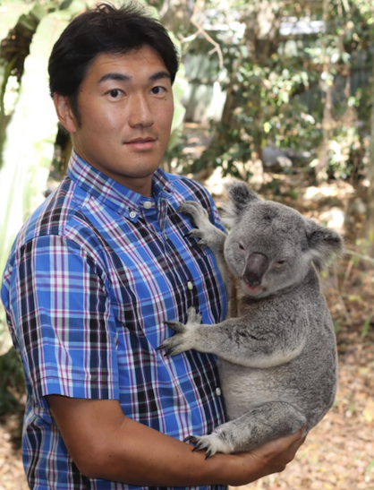

先生図鑑とは
先生一覧
機械工学科
電気情報工学科
電子制御工学科
情報工学科
環境・建設工学科
人文科学科
数理科学科
高見 昭康
機械工学科 / 教授
#材料力学
#計算力学
芦田 洋一郎
電気情報工学科 / 准教授
#制御工学
#システム工学
堀内 匡
電子制御工学科 / 教授
#人工知能
#強化学習
佐々木 耕太
情報工学科 / 准教授
#脳科学
#認知科学
#人工知能

山口 剛士
環境・建設工学科 / 准教授
#環境微生物工学
#衛生工学
人文 太郎
人文科学科 / 教授
#哲学
#歴史学
数理 花子
数理科学科 / 准教授
#応用数学
#統計学